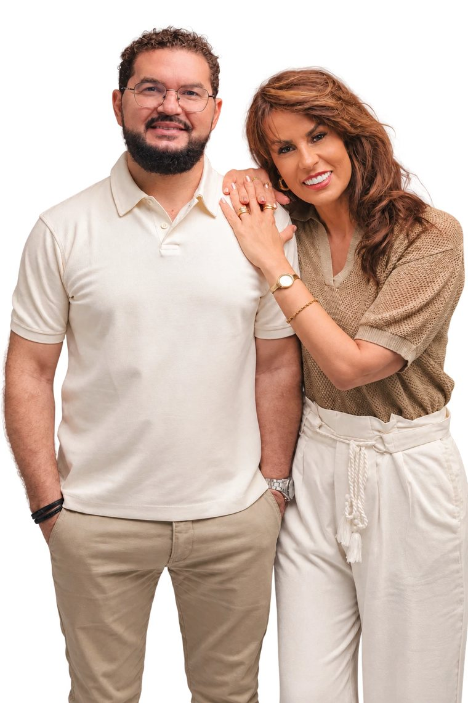

Sua atuação envolve pregações, cursos e mentorias sobre vida cristã, liderança, relacionamentos, gestão de conflitos e educação financeira. Com uma linguagem acessível e pastoral, conecta os ensinamentos bíblicos aos desafios do cotidiano, incentivando o amadurecimento espiritual e a prática da fé na família, no trabalho e na comunidade.
Também compartilha reflexões e mensagens nas plataformas digitais, buscando levar o evangelho além das paredes da igreja e aproximar pessoas à Palavra de Deus.
Casado com Andrea Messias e pai de Nathan e Adriel, valoriza a família como espaço de amor, cuidado e vivência dos princípios que ensina.
Em Uma fé que se vive — 365 dias de Palavra, crescimento e transformação, convida o leitor a cultivar um encontro diário com Deus e a transformar o aprendizado da Palavra em atitudes que expressem o caráter de Cristo.
Acompanhe nas redes sociais @nei_messiasNei Messias é pastor, empreendedor social e formado em Teologia. Pastor sênior da Igreja Nasci Pra Deus, em Guarulhos (SP), serve ao ministério pastoral há mais de 20 anos, dedicando-se ao ensino da Palavra de Deus, ao cuidado de pessoas e à formação de líderes.
